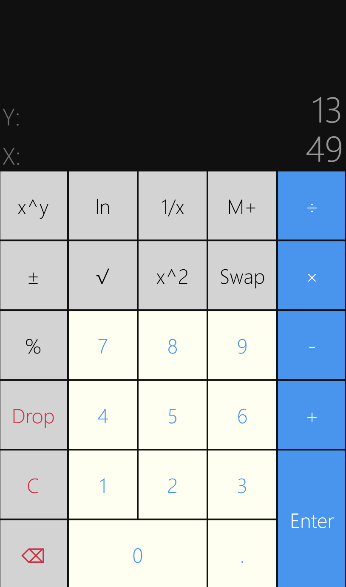

SimpleCalc
RPN Calculator for Windows Phone
Hand-coded
I made this app in 2015 when I worked at Microsoft and was using Windows Phone as my primary mobile device. I have enjoyed Reverse-Polish Notation (RPN) calculators since my undergraduate days, but I found there was a dearth of options on the Windows Phone store.
While a polished UI was perhaps the primary goal of this project, the central challenge proved to be the parsing engine.
